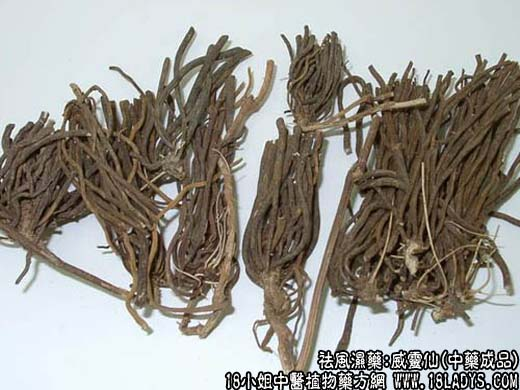
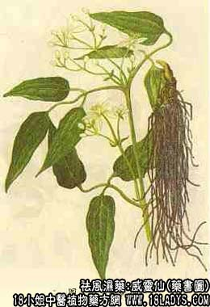

原文连接:https://www.daquan.com/post/2040.html



本品为常用中药，列于宋《开宝本草》中。
别名：灵仙，铁丝灵仙。
来源：为百合科多年生攀缘状藤本植物粘鱼须的干燥根及根茎。野生，或毛茛科灵仙。
产地：主产于河南、山西、陕西。
性状鉴别：本品根茎呈不规则的块状，略似姜块，表皮黑棕色，质硬，断面淡黄白色，周身生多数细长的根。根长20～100厘米，直径约1毫米，甚均匀，表皮棕褐色或黑棕色。光而无皱，略弯曲，上面疏生有效的勾状刺及少数短须根，质坚韧似铁丝，不易折断，断面白色，放大镜下可见由小孔组成的浅棕色环纹位于表皮和中心的中间（导管）。根茎上另有残茎数枚，略弯曲。长约3～7厘米，直径约8毫米，枯黄色，茎上有1～3个如竹节的段，茎上生有多数针状小刺，茎柴质坚韧。气无、味淡。以根茎小，根多而细长，地上茎上者佳。
主要成分：含甾体皂甙。
功效与作用：祛风湿，通经络，其作用为镇痛。动物实验初步发现本品还具有一定麻醉作用。又本品的醋浸液对鱼骨刺似有一定的软化作用。体外试验对伤寒杆菌、肠炎杆菌，宋内氏痢疾杆菌等有抑菌作用。
炮制：除去根茎、切嘴、生用。
性味：辛、咸、温。
归经：入十二经。
功能：散风祛湿、行气通络。
主治：风湿痹痛，瘫痪，麻木。
临床应用：1、用于治疗痹症而偏于寒者。对慢性风湿性关节炎，有四肢关节痛，屈伸不利，手足发麻等症状者合适，配秦艽、桑枝或木瓜、牛膝等。
2、用于治疗鱼骨刺梗阻咽喉部或食道上段。配醋和砂糖水煎慢咽，方如去骨汤。有效者在服药后数小时梗阻感觉和疼痛开始减轻，以后逐渐消失，少数病例须服第二剂。至于比较粗大的鱼骨、鸡骨梗阻，或骨刺虽小，但梗阻较深者，威灵仙治疗一般无效，不宜应用，应从速手术取出，以免贻误病情。
使用注意：本品作用较强烈，身体太虚弱者慎用。服时忌茶。
用量：常用量6～12g。
处方举例：去骨汤：威灵汤30g、醋30g、砂糖6g，先用两大碗水煎威灵仙，经数沸后去渣，然后加粗和砂糖，候沸后放温，于二十分钟内缓缓含服咽下。
附：又可用一下处方：威灵仙（枝、茎千品）半斤，野菊花30g，加水1300毫升，慢火煎成约450～470毫升，加10%醋酸10毫升，再加苯甲酸钠1.2克作防腐，每用60毫升，于20分钟内慢慢饮完。
注：威灵仙的品种较多，应用较广的有两大类；一类是上述品种，京津及河北等地习用；一类是毛茛科植物威灵仙的根及根茎（京津名黑薇）此种使用地区较广，遍及中南、华东、西南等地，其根茎形态略与粘鱼须灵仙相同，根茎块状，根簇生，较粘鱼须灵仙粗短，长约15～25米，直径约2毫米，质脆易折断。断面白色，粉性，中有淡黄色木质心。除以上情况外，有的地区使用毛茛科威灵仙的地上全株作灵仙药用，如四川、湖南、湖北等省的部分县。也有的使用百合科植物短梗菝葜的根茎作威灵仙用，如河南洛阳等地区。还有陕西省产的一种威灵仙，多砍去根茎，只留细根药用，其内外形色长度基本与粘鱼须灵仙相同，只是支条粗细不匀，直径1～2毫米，质较脆易折断，其断面亦有一圈小孔，但位近于外皮层。就其形态分析亦属于百合科植物的根。目前，天津市场上应用三种不同形态的威灵仙。1、粘鱼须的根和根茎；2、陕西省产的威灵仙；3、河南省产的菝葜的根茎。其疗效是否相同，还有待今后进一步探讨研究。